지구 온난화로 인한 피해
지구 온난화란?
태양의 복사에너지가 지구의 표면에서 반사되어
지구 밖으로 나갈 때 대기층에 온실가스가 다시 지표면으로 되돌아와
지구의 평균 온도가 상승하게 되는 현상입니다.
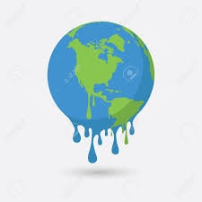
지구 온난화로 인해 북극곰들을 포함해
여러 야생동물들이
고통을 받고 있습니다.
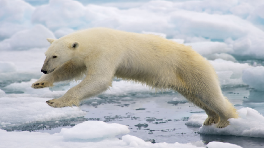
해결 방안
1. 교통 수단 개선
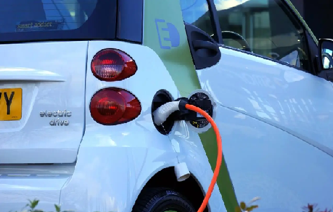
우리가 이용하고 있는 교통 수단들은 온실 가스 배출의 큰
공급원입니다.
이산화탄소 배출량이 적은 하이브리드차와 신재생 에너지로 생산된
전기차를 이용하고, 상대적으로 효율성에 비해 이산화탄소 발생량이
적은 대중교통을 이용해야 합니다.
2. 친환경 소비와 재활용
온실 가스 배출을 줄이는 가장 쉬운 방법은 물건을 덜 사는
것입니다. 단순히 물건을 덜 사는 것만으로도 쓰레기가 줄어들고
새로운 제품 생산에 소모되는 에너지를 아낄 수 있습니다.
친환경
제품과 에너지 효율이 높은 제품을 구입하고, 자원을 절약하며
재활용하는 생활 습관을 길러야 합니다.
수질 오염으로 인한 피해
수질 오임이란?
수질 오염은 가정에서 쓰고 버린 생활 하수, 공장에서 나오는 공장
폐수, 농촌의 농 · 축산 폐수 등이 정화되지 않고
하천이나
호수로 배출되어 물이 오염되는 것을 말합니다.
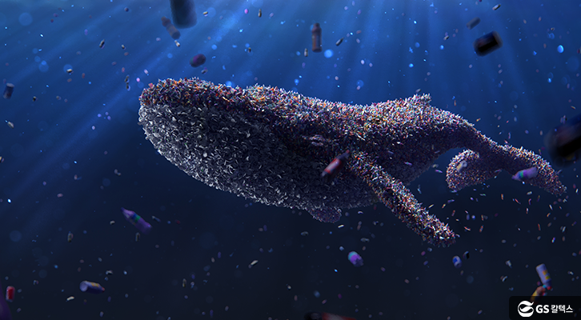
물이 오염되면 악취가 나며 물고기들이 떼죽음을 당합니다.
공장 폐수를 통해 흘러나온 수은, 납, 카드뮴 등과 같은 중금속이
먹이사슬을 따라 물고기들에게 쌓이게 되며
뿐만 아니라, 그 물고기를 먹는 포식자의 몸에도 점점 쌓이게 되어
해양 생태계를 망가뜨릴 수 있습니다.

공장 폐수와 더불어, 바다 해안가에 바다 쓰레기를 무분별하게 버려
해안 동물들이 쓰레기에 몸이 걸리거나 다치며
또한 무분별하게 바다 쓰레기를 섭취하는 동물들이 늘어나면서 바다
동물들에게 커다란 위협이 되고 있습니다.
해결 방안
1. 가급적 샴푸 대신 비누 사용하기
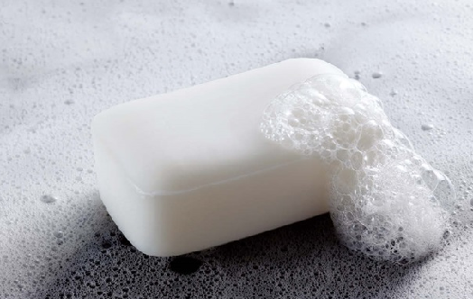
샴푸에 들어있는 성분 중 하나인 계면활성제는 물과 기름이 섞이지
않게 도와주는 성분으로 환경 오염에 큰 영향을 미칩니다.
그래서 비누를 사용함으로써 어느정도 수질오염 방지에 도움이 될 수
있습니다.
2. 바닷가에 함부로 쓰레기 버리지 않기
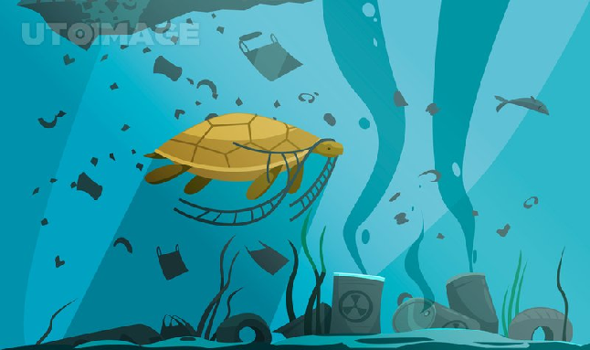
우리가 바닷가에 버리는 쓰레기들은 파도를 따라 떠밀려가면서
해양에 사는 동물들에게 큰 피해를 입힐 수 있습니다.
그렇기에 가급적 바닷가에 쓰레기를 버리지 않는 것이 수질오염
방지에 도움이 될 수 있습니다.
대기 오염으로 인한 피해
대기 오염이란?
공장의 매연, 자동차의 배기가스 등 인간활동으로 인한
대기상의 환경오염을 말합니다.
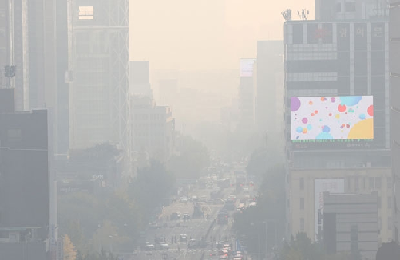
대기 오염은 인간보다 동물에게 더 치명적입니다.
만약 당신이 미세먼지가 심한 날 반려견과 산책을 한다고 하면
인간은 1분에 평균 12~18회 호흡하는 반면
반려견은 1분당 평균 15~35회 호흡을 하며 인간보다 더 많은 공기를
들이마시며
산책할 때 킁킁거리며 냄새를 맡는 등 사람보다 훨씬 많이
대기오염의 피해를 받을 것입니다.
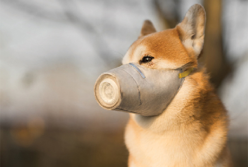
고라니는 인간의 무분별한 개발로 인해 살 곳을 점점 잃어가며
도시와 도로 민가로 내려오고 있습니다.
고라니가 도로로 내려오며 도로로 이동함에 따라 로드킬 현상이
발생하는 등 고라니 뿐만 아니라 인간에게도 큰 피해로 작용하고
있습니다.
해결 방안
1. 대중 교통이나 자전거 이용하기
지구온난화와 마찬가지로, 우리가 타는 자동차들은 대기오염물질들을
많이 내뿜고 있습니다.
그러기에 많은 사람들이 이용하며 대기오염물질을 적게 배출하는
대중교통을 이용하는 것이 대기오염을 해결하는 데에 도움이 될 수
있습니다.
2. 흡연 하지 않기
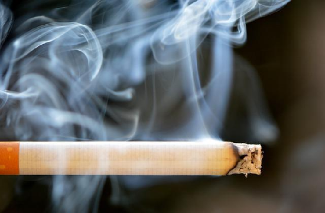
우리가 피는 담배는 우리의 건강을 해칠 뿐만 아니라,
대기오염물질을 많이 발생시켜 공기를 오염시킵니다.
그러기에 흡연을 줄임으로써 대기오염을 해결하는 데에 작게나마
도움이 될 수 있습니다.
무분별한 쓰레기 투기
우리가 무분별하게 버린 쓰레기들은 야생동물들에게 그대로 노출되며
한편으로는 커다란 위협이 될 수도 있습니다. 쓰레기에 그대로
노출되는 코끼리와 사슴 인간들이 쓰레기를 무단으로 투기하는
가운데 야생동물들의 직접적인 피해가 우려를 증폭시키고
있습니다.
야생 동물들이 많이 사는 개발도상국의 경우 쓰레기 배출기준의
준수도 미흡한데다, 야생동물 보호책도 달리 마련되지 않아서
쓰레기로 인한 피해는 더더욱 커지고 있습니다.
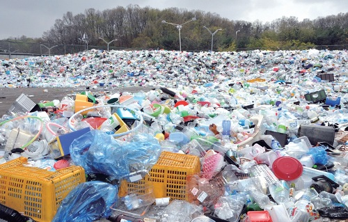
인간들이 쓰레기를 무단으로 투기하는 가운데 야생동물들의 직접적인
피해가 우려를 증폭시키고 있습니다.
야생 동물들이 많이 사는 개발도상국의 경우 쓰레기 배출기준의
준수도 미흡한데다, 야생동물 보호책도 달리 마련되지 않아서
쓰레기로 인한 피해는 더더욱 커지고 있습니다.
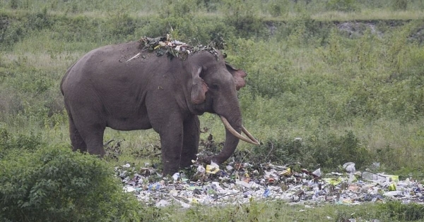